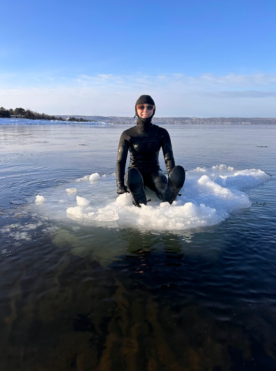
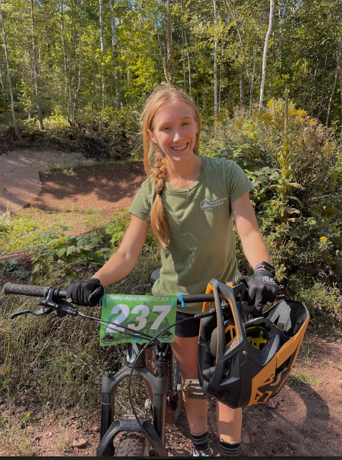

Alissa Smith

My name is Alissa Smith and I am a student at UMD. I am currently in my last semester of the Human Biology program at the University of Minnesota Duluth, and hoping to pursue a career in private practice health care. My career goals revolve around helping people feel better in whatever way that looks like for me in my pursuit of graduate school, whether that is through physical therapy, athletic training, or nutritional therapy. I am interested in job shadowing in any of these fields.
My Hobbies & Interests
 I love doing anything outside, and am willing to try almost anything, up to and including commandeering an ice chunk in the lake. Duluth is the perfect place to get involved in a sport for any season and to stay active. I have enjoyed becoming involved in the outdoor community as I have gotten older. Many of my friends have been people I have bonded with over sports, campus ministry, or church. I am a Christian, and have loved getting to know my church community here in Duluth as well.
 Some of my favorite hobbies include mountain biking and running. For mountain biking, I enjoy doing cross-country rides, as well as downhill biking. Duluth has miles of trails for athletes of all levels. I also enjoy running of any sort, although I have a particular love for trail running. One of my goals in the near future is to become a better swimmer.
Some of my favorite hobbies include mountain biking and running. For mountain biking, I enjoy doing cross-country rides, as well as downhill biking. Duluth has miles of trails for athletes of all levels. I also enjoy running of any sort, although I have a particular love for trail running. One of my goals in the near future is to become a better swimmer.
 Mountain biking is one of my favorite ways to explore the outdoors and stay active. Whether it's riding local trails or discovering new places, biking brings a sense of adventure and accomplishment.